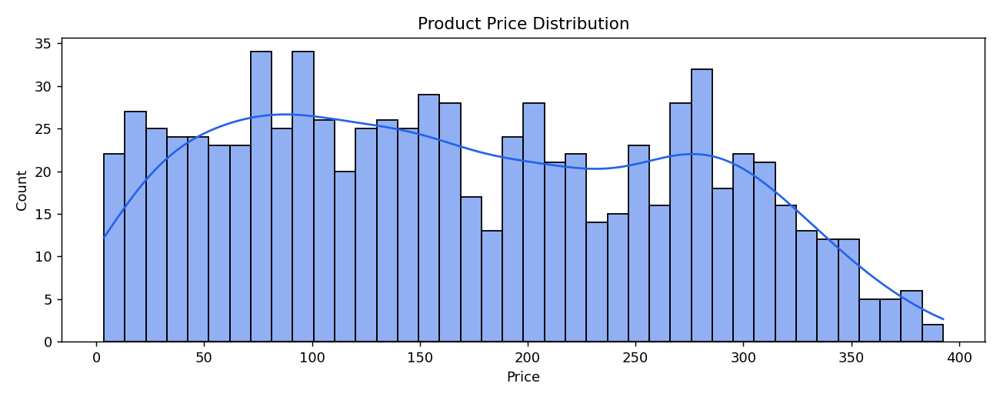
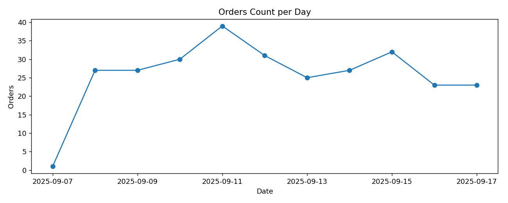
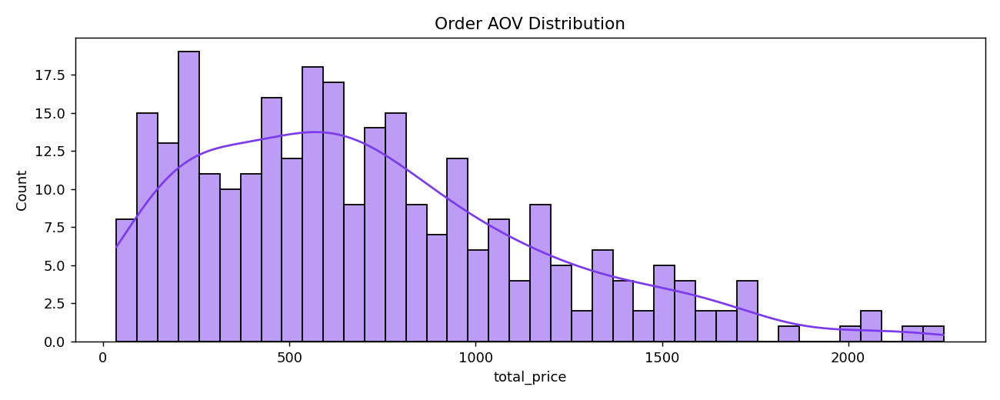

DATA REPORT
Generated: 2025-09-17T22:55:42.023409+00:00

Total products: 825 Distinct sources: 3 Top category: Electronics Price min: 3.52 | median: 159.97 | mean: 169.39 | p90: 308.76 | max: 392.59 Duplicate logical key pairs: 232 (64.44% of keys) Outlier price ratio (IQR fence): 0.00% (lower=-178.92, upper=519.67)
Products by Source (Top 10)
| Source | Count | % |
|---|---|---|
| ebay | 364 | 44.12% |
| shopify | 319 | 38.67% |
| amazon | 142 | 17.21% |
|  |
Total orders: 285 Timespan (days): 9 GMV total: 202023.95 | mean: 708.86 | median: 627.05
Orders by Source (Top 10)
| Source | Count | % |
|---|---|---|
| shopify | 285 | 100.00% |
|  | ||
|  |
Derived columns: category_freq, price_amount, price_currency, source_freq
Derived columns: aov_7d, gmv_7d, order_value_num, orders_7d, recency_days
The product dataset establishes the commercial catalog footprint (source diversity, category concentration and price dispersion), while the orders dataset captures temporal demand and monetary performance. Provider (source) breakdowns reveal distribution of catalog and demand.
Engineered features enable downstream tasks:
- Price segmentation and elasticity exploration (price_bucket, price_log).
- Supplier/source reliability & concentration (source_freq).
- Momentum & short‑term commercial monitoring (gmv_7d, orders_7d, aov_7d).
- Lifecycle / churn proxy via recency (recency_days).
Data Quality & Risk Observations: - Outlier ratios contextualize pricing anomalies for potential cleansing or curation steps. - Duplicate logical key pairs (source + source_id) indicate upstream id uniformity or merge correctness. - Run log metrics (new_ vs updated_) help track incremental ingestion health; rising updated/new ratio may signal dataset maturity or stagnation.
Recommended Next Steps: 1. Establish anomaly thresholds for price outliers and rolling GMV deltas. 2. Persist daily aggregate tables for BI dashboards. 3. Integrate simple forecasting (e.g., 7d GMV moving average horizon extension) for operations planning.
| Dataset | Rows | Enriched |
|---|---|---|
| Products | 825 | Yes |
| Orders | 285 | Yes |